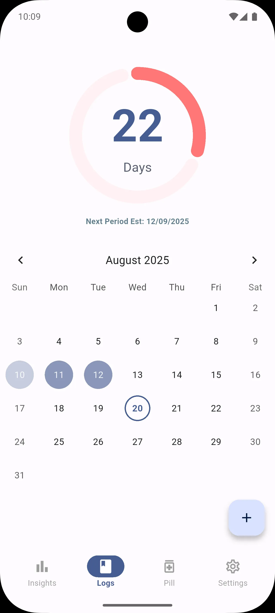
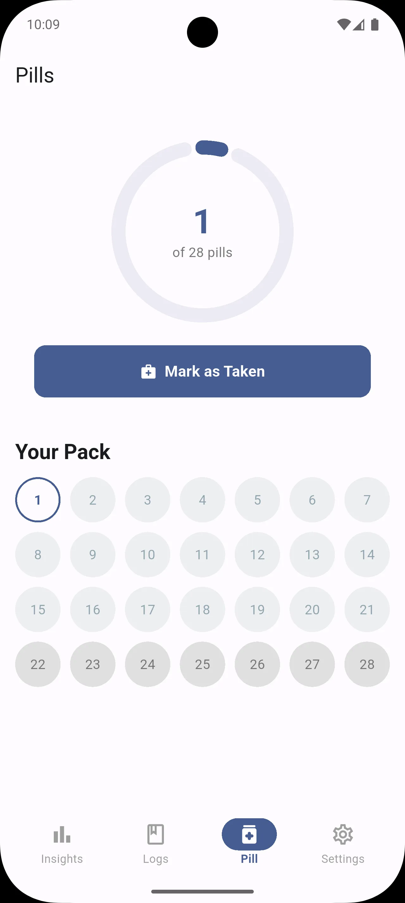
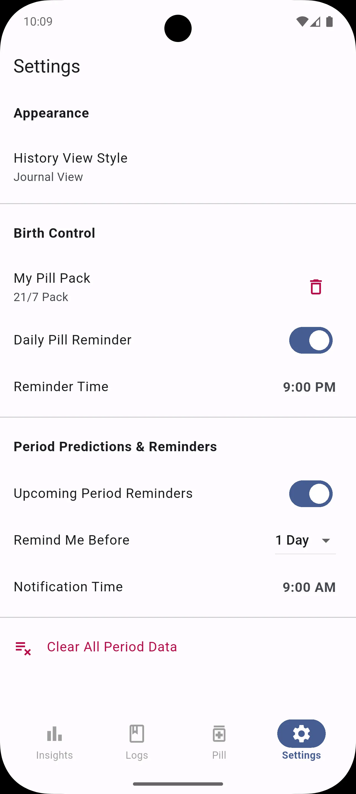
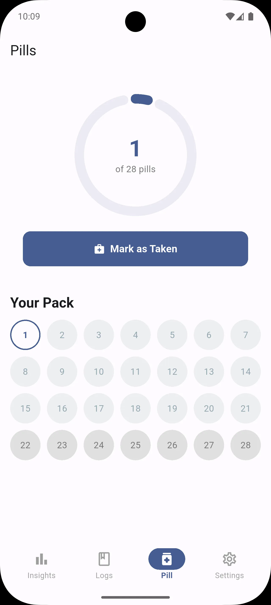
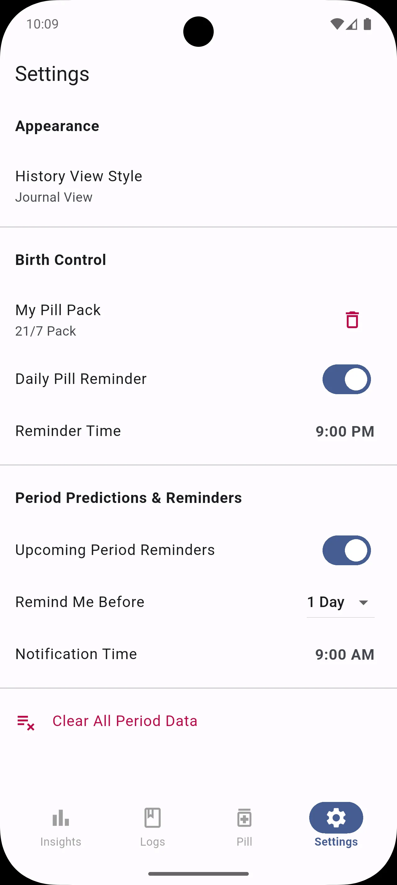

Why Menstrudel? Because Privacy Matters.
In an era where personal health data is a commodity, Menstrudel offers a secure sanctuary. All your cycle information, symptoms, and logs are stored only on your device. We can't see your data, and we don't want to.
- Absolutely Private: Your data never leaves your phone.
- Completely Offline: Works anywhere, anytime, without an internet connection.
- 100% Free & Open Source: Transparent, community-driven, and free forever.
Simple, Powerful Features
Effortless Logging
Quickly log your period, symptoms, and flow intensity with just a few taps.
Reliable Predictions
Get accurate estimates for your next cycle based on your personal history.
Intuitive Pill Regimen
Easily track your 21-day, 28-day, or custom pill pack with a single daily tap.
Smart Reminders
Set customisable alerts for your period, pill intake, or tampon changes.
Take a Look
 


